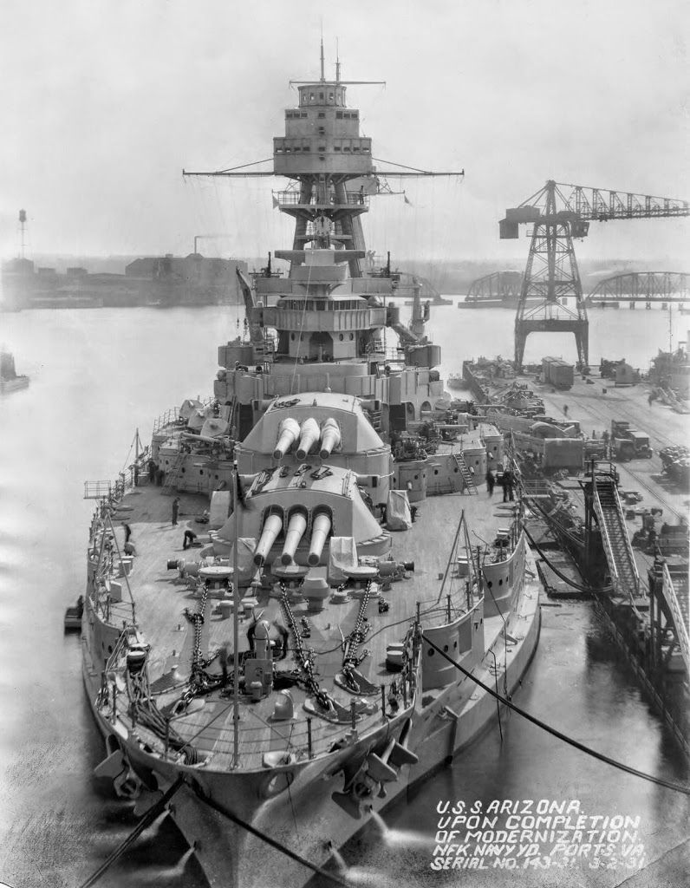

| Home - Home | Intro - Intro | Attack On Pearl Harbor - Attack On Pearl Harbor |
Pearl Harbor After Math - Pearl Harbor After Math |
The Arizona a ship capable of destruction beyond what many could attain or imagine a ship made to withstand the same destructive power it dished out.
Unfortunately it's power was to never be used against enemies of the United States as it sunk to the bottom of the harbor the pride of US fleet was no more.

The USS Arizona commissioned 17 October 1916 was an impressive ship here we will go over its armarments
Armarments
triple 14 in (356 mm) guns
4
single 5 in (127 mm) guns
22
single 3 in (76 mm) AA guns
4
21 in (533 mm) torpedo tubes
2
Seeing the power it was able to dish out we will also see that this was no glass cannon either.
Sporting armor belts 8-13 inches thick. The bulkheads alone were 8-13 inches thick. It's barbettes (The towers turrets sat upon) 13 inches thick keeping it relatively safe from other ships exploding it's ammunition.
Over all the USS Arizona was a force the Japanese were not interested in meeting on fair terms and as well as it looking like something nice for Japanese Pilots to have under their belt it is clear as to why it was the next best target.
Pearl Harbor | Home - Home |
Intro - Intro |
Attack On Pearl Harbor - Attack On Pearl Harbor | The Arizona - The Arizona |
Pearl Harbor After Math - Pearl Harbor After Math |
All images and info gathered from Wikipedia.
Donate to veterans charities here - DAV